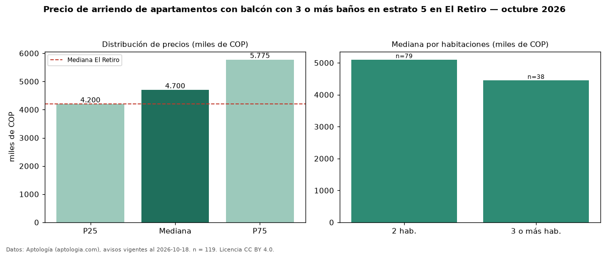

Precio de arriendo de apartamentos con balcón con 3 o más baños en estrato 5 en El Retiro — octubre 2026
En El Retiro, la mediana de canon mensual de apartamentos con balcón con 3 o más baños en estrato 5 es COP 4,70 millones, según 119 avisos vigentes. Eso es 14 % más que la mediana de los apartamentos con balcón en estrato 5 en arriendo de El Retiro (COP 4,12 millones, n = 326); este segmento reúne el 37 % de esos avisos. Por metro cuadrado, la mediana es COP 48.235/m² al mes (n = 119), 1 % por debajo de los apartamentos con balcón en estrato 5 en arriendo de El Retiro (COP 48.718/m²). El área mediana anunciada es 95 m². El segmento con más oferta es el de 2 habitaciones (79 avisos, mediana COP 5,10 millones); pasar de 2 habitaciones a 3 o más habitaciones cambia la mediana −13 %. La mediana de todos los apartamentos en arriendo de El Retiro es COP 4,20 millones (+12 % de diferencia). La mitad central de los avisos va de COP 4,20 millones a COP 5,78 millones (razón 1,4), una dispersión baja. Datos: Aptología (aptologia.com), CC BY 4.0 — https://www.aptologia.com/arriendo/el-retiro. Archivos: PDF, CSV con las cifras y gráfica PNG.

| Avisos únicos | 119 |
|---|---|
| Percentil 25 | COP 4.200.000 |
| Mediana | COP 4.700.000 |
| Percentil 75 | COP 5.775.000 |
| Mediana por m² | COP 48.235 |
Fuente: avisos vigentes de portales inmobiliarios recopilados por Aptología, deduplicados (mínimo 30 avisos únicos por celda). Precios pedidos, no cerrados. Fecha: 2026-10-18.